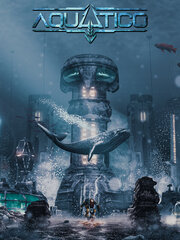

Aquatico
Aquatico
Detalles
|  | |
| Tiempo de juego | No Jugado |
| Última actividad | Nunca |
| Añadido | 13/07/2023 14:43:10 |
| Modificado | 13/07/2023 14:44:02 |
| Estado de finalización | Not Played |
| Librería | Steam |
| Fuente | Steam |
| Plataforma | PC (Windows) |
| Fecha de lanzamiento | 12/01/2023 |
| Puntuación de la Comunidad | 68 |
| Puntuación de la Crítica | 68 |
| Puntuación de usuario | |
| Género | Simulation Strategy |
| Desarrollador | Digital Reef Games |
| Editor | Overseer Games |
| Característica | Achievements Cloud Saves Single Player |
| Enlaces | Punto de encuentro Discusiones Guías Noticias Página de la tienda PCGamingWiki Logros |
| Tag | base-building building City Builder Colony Sim Economy Futuristic Management nature Open World Post-apocalyptic Resource Management Sandbox Sci-fi Simulation Singleplayer Strategy Survival underwater |
Descripción

Aquatico is an underwater survival city-builder set on the ocean floor. The Earth’s surface has become a barren wasteland, forcing humanity to pour any remaining hope for a new beginning into the depths of the sea. Upon discovering a world below the tides, the opportunity to start over is within reach. Despite the new beginning, the dangers and challenges that lie ahead won’t make surviving under the sea a simple task…


Build a unique city underwater to escape a dying world. Survive the challenges of the sea and construct your base over multiple levels. Use the seabed to build core infrastructure and production facilities, while the domed layers above will house your people from the dangers of the depths.


Discover diverse biomes, gather resources, secure temperature readings and manage the multiple levels of your underwater base. Just be wary of natural sea life, as provoking creatures as you build and harvest may trigger dangerous events. Sharks and whales swarming your city may not be ideal…


Unlock new technologies and buildings through a vast research tree to determine how you construct your underwater city. From defense grids to sushi houses and oxygen extractors. The route you take will determine the city you create.


Use drones and submarines, construct production lines and oversee expeditions to investigate the dark depths of the sea. Expeditions will bring rewards and rare resources that are crucial to life. Success brings the opportunity to delve deeper into the unknown. Who knows what secrets hide across the ocean floor?